Concept 1 : The written letter is a documentation of motion
It’s the Sign-age.
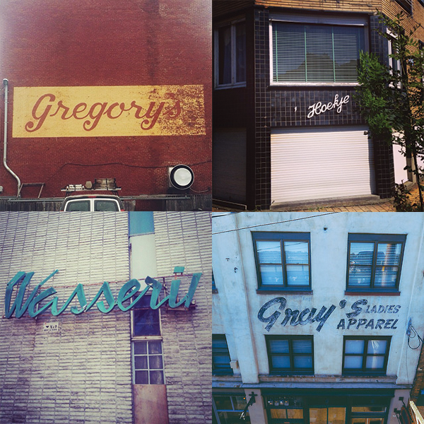The earliest form of advertisement are signages. It is the ancient Egyptians and Romans who were known to first utilize the signage. Before the discovery of paint, early signage were made out of carved symbols on stone and terracotta.
Taverns, Blacksmiths and other trades all employed the use of signage to promote their services to the public.
Since the purpose of signboards was to attract the public, they were often of an elaborate character. Not only were the signs themselves large and sometimes of great artistic merit (especially in the 16th and 17th centuries, when they reached their greatest vogue) but the posts or metal supports protruding from the houses over the street from which the signs were swung, were often elaborately done as well. Several beautiful examples of wrought-iron supports survived both in England and continental Europe.
Signs are best known in the form of painted or carved advertisements for shops, inns, etc. They are one of various emblematic methods used since time immemorial.
Imperfections are human
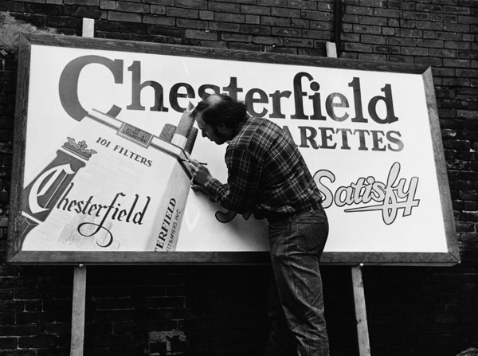Our logo is based on the ancient art of signs. To this day, the art of the hand made and hand painted signages riddle Europe, from quaint small shops to big brands. They all utilize signs be it painted, or engraved on the wall. It is what makes certain cities evoke a feel of nostalgia.
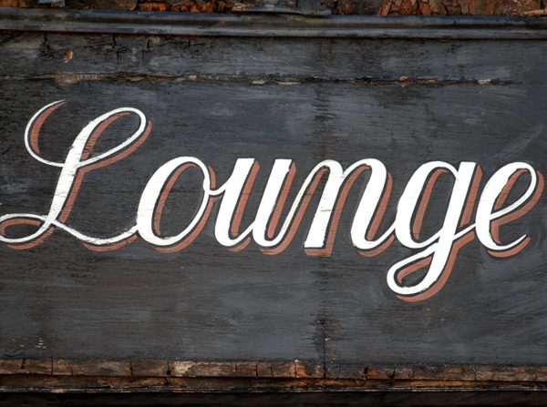Bespoke logos emulate warmth, compassion and empathy. There’s a certain appeal in knowing that something has been handmade and crafted by a human person. You feel the blood, sweat and tears that went to creating that product that you love so much.
When everything can be made with machine type accuracy, when everthing can be cut just the right way, when every burger can be guaranteed to look and taste exactly the same- we lose something important in the process.
We lose the human touch.
Why do you think ‘bespoke drinks, artisan food products and your mom’s home cooked meals' are popular lately?
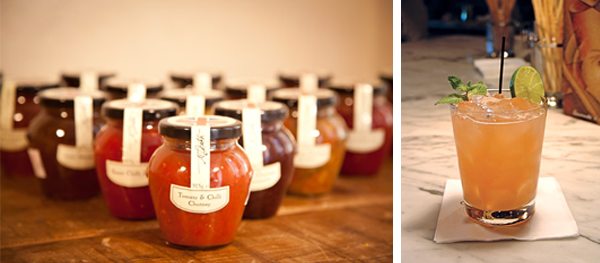Everything that holds some kind of sentimental value are not 100% perfect. It’s the imperfections that add value to them. It’s the humanity that comes along with it. The story, the journey. The imperfections that we have chosen to ignore are signs of the human touch. It may not be flawless, but at least it’s human.
The deliberate imperfections that you see convey warmth and true emotion that can never be replicated by any machine.
Bespoke typography gives it depth and authenticity that’s unique yet distinctly, Frittery.
There’s a saying that “Perfection is boring, imperfection with intention, yields more interesting results”.
The stroke and the signage
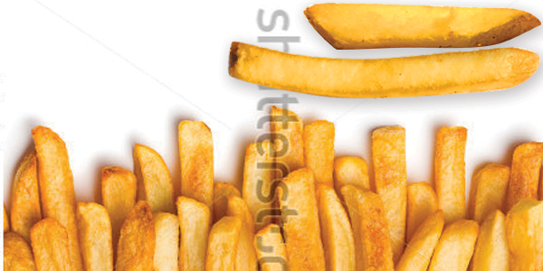Our logo is based on the concept of hand painted and bespoke typography but at the same time inspired by the belgian Frite.
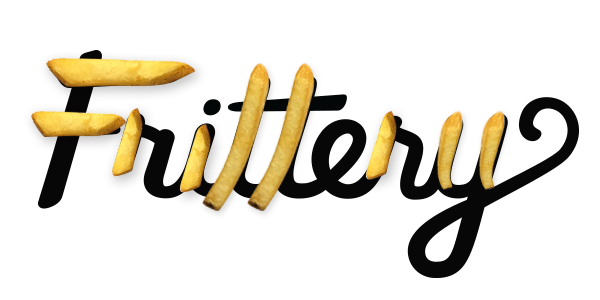 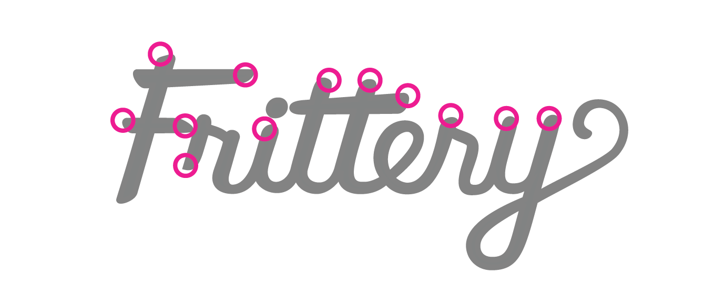The thicks of the downstrokes establish the foundations of the letters and the thins of the upstroke give us the motion and fluidity of a painter's touch. Every downstroke and terminals were inspired by the Frite.
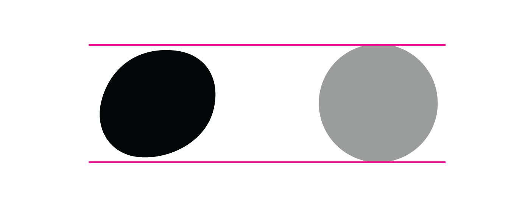The tittle normally a perfect circle, is intentionally italicized and imperfect to show frites are meant to be enjoyed in a messy manner. Frites are meant to be eaten using your hands. It’s ok to be messy.
Typography
Although our mark is strong enough to stand on its own, it still needs to be paired with type. Ideally, it would be great to hand paint every single menu item, every single promotion and every single collateral that The Frittery will need.
But that will not be very cost effective.
To get around this, we employ a typeface that can be used and reused to evoke a certain warmth and humanity to complement our logo.
Enter Core Rhino.
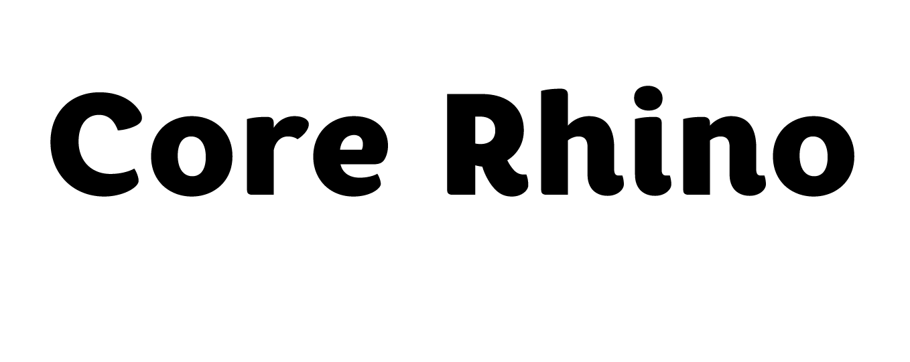Core Rhino
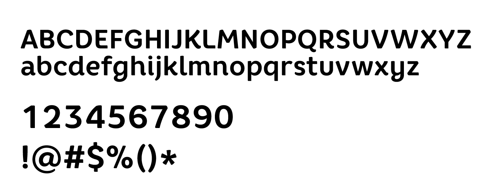Core Rhino was designed by the S-Core group, and was purposely created to emulate brushed strokes to come across gentle and soft. The warmth permeates through its roundness and letterforms.
The typeface is practical, friendly and inviting. It is flexible enough to be readable from a distance and up close without deforming or showing any signs of breaking. It is truly a flexible typeface waiting to be used in a multitude of collaterals.
When we use Core Rhino in unison with our mark, we create an identity that is very distinct and very Frittery.
The Frittery Promise
The Frites that The Frittery produces may not be 100% precise (The potatoes themselves come in different shapes and sizes anyway, right?). From the moment they’re peeled, cut and to the moment they are fried, rest assured that all of these steps have been meticulously overseen by an individual passionate about giving you a product that is only second to none. The Frites you put in your mouth have that crunch and chewiness that only the Frittery can guarantee.
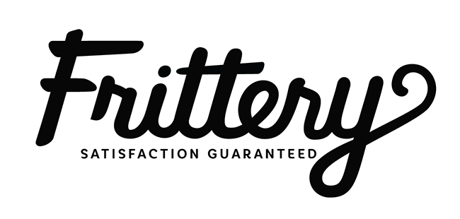